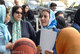

پذيرش > تریبون > گزارش كمپين > دیدار اعضای کمپین یک میلیون امضاء با زنان فعال مراکش، ترکیه و بلژیک


 دیدار اعضای کمپین یک میلیون امضاء با زنان فعال مراکش، ترکیه و بلژیک دیدار اعضای کمپین یک میلیون امضاء با زنان فعال مراکش، ترکیه و بلژیک
30 آبان 1385 - - نسخه قابل چاپ
الناز ناطقی
شب گذشته برخی از اعضای «کمپین یک میلیون امضاء برای تغییر قوانین تبعیضآمیز» به نمایندگی از سایر اعضاء، دیدار دوستانهای با فعالان زن کشورهای مراکش، بلژیک و ترکیه داشتند. این هیئت که متشکل از روزنامهنگاران، حقوقدانان، فعالان سیاسی، اجتماعی و اعضای سازمانهای غیردولتیِ زنانِ کشورهای مذکور است، برای شرکت در نشست «مشارکت زنان و نقش آنان در تصمیمگیری» در ایران به سر میبرد. از آنجا که یکی از اهداف سفر این گروه به ایران تبادل تجربیات و گفتگو در خصوص مسائل مرتبط با زنان است و نیز فعالان زن مراکشی جمعآوری یک میلیون امضاء برای تغییر قوانین تبعیضآمیز را در کارنامهی سالهای اخیر خود دارند، این دیدار به منظور آشنایی بیشتر فعالان زن با یکدیگر، معرفی کمپین یک میلیون امضای زنان ایرانی و انتقال تجربیات صورت گرفت.
در ابتدا مهمانان یک به یک خود را معرفی کرده و شرح کوتاهی از فعالیتهایشان ارائه دادند. که در بین آنان معاون شهردار بروکسل، نمایندهی پارلمان، مشاور دادگستری بلژیک، استاد دانشگاه و قاضی دادگاه مراکش دیده میشد. سپس رضوان مقدم یکی از اعضای کمپین، تاریخچهي صد سال مبارزهي زنان ایرانی برای دستیابی به حقوق خویش را به طور مختصر بازگو نمود. وی گرفتن حق آموزش توسط زنان را در 99 سال پیش با تاسیس اولین مدرسهي دخترانه به نام «دوشیزگان» از اولین قدمها در این زمینه برشمرد و افزود زنان ایرانی قدمهای بعدی را در این راه با گرفتن حق طلاق و حق نگهداری از فرزندانشان پس از طلاق برداشتند. رضوان مقدم هم چنین حق رای را یکی دیگر از حقوقی که زنهای ایرانی آن را به دست آوردند و در این زمینه از سایر کشورها پیشی گرفتند، عنوان کرد. وی افززود: «امروز مبارزات زنان شکل تازهای به خود گرفته و کمپین یک میلیون امضاء یکی از اشکال این مبارزه برای رسیدن به حقوق برابر است.» مقدم با اشاره به تجمع 22 خرداد سال 84 در جلوی دانشگاه تهران آن را یک گردهمایی 6 هزار نفره در اعتراض به قوانین تبعیضآمیز مندرج در قانون اساسی ذکر کرد و گفت طی آن تجمع فعالان زن با صدور بیانیهای خواستار اصلاح قانون اساسی شدند. وی یادآور شد: «سال بعد در 22 خرداد 85 برای یادآوری اینکه زنان از تلاش برای رسیدن به خواستههای خود عقب نمینشینند در میدان هفت تیر جمع شدند و بار دیگر درخواست خود را برای تغییر قوانین مطرح کردند. اما متاسفانه مورد خشونت جسمی توسط پلیس قرار گرفتند و حدود 70 نفر دستگیر شدند.»
رضوان مقدم با بیان این موضوع که ما از تجربهي کشورهای دیگر از جمله مراکش برای جمعآوری یک میلیون امضاء استفاده کردیم، عنوان کرد اما تفاوت در این است که کمپین یک میلیون امضاء در ایران با آموزش همراه میباشد.
در تشریح نحوهی کار کمپین یک میلیون امضاء نیز بیتا طاهباز گفت: «جمعآوری یک میلیون امضاء محدودیت زمانی ندارد گرچه امیدواریم طی یک یا دو سال آینده موفق به جمعآوری یک میلیون امضاء شویم.» وی اهداف اصلی این کمپین را آگاهی دادن به تودهی زنان، آشنا کردن آنان با حقوق خود و حساس کردن جامعه نسبت به مسائل زنان دانست و افزود: «هدف کمپین رویاروی با حکومت ایران نیست بلکه ارتباط گرفتن با اقشار مختلف زنان و آموزش آنهاست. افرادی که مسئول جمعآوری امضاء هستند، کارگاههای آموزشی را به این منظور گذراندهاند و ضمن صحبت با تکتک افراد به آنها دفترچهي آموزش حقوقی داده میشود.» وی یکی از نقاط قوت کمپین را منحصر نبودن این طرح به تهران و فراگیر شدن آن در کل ایران و شهرهای کوچک و بزرگ دانست.
در همین حال اعضای کمپین ضمن تاکید بر اینکه کمپین یک میلیون امضاء متشکل از سازمانها نیست بلکه تشکیل شده از افرادی که به صورت مستقل از سازمان یا انجمن خود در آن فعالیت میکنند، گزارشی کوتاه از نوع فعالیت هر یک از کمیتههای کاری کمپین ارائه دادند.
فریبا دادودی مهاجر نیز در پاسخ به سوالی نوع مشارکت زنان و مردان سیاسی را در کمپین با این تقسیم که در داخل حاکمیت قرار دارند یا خارج از آن و دید جنسیتی دارند و یا نه، تشریح کرد.
در پایان یکی از زنان قاضی در مراکش چگونگی عملکرد کمپین یک میلیون امضاء را در مراکش توضیح داد و گفت: «ما در این راه از پارلمان و دولتهای اروپایی کمک خواستیم.» وی تنها مانع در راه پیشرفت کمپین در مراکش را گروههای مذهبی افراطی دانست و گفت: «در انتها پادشاه مراکش که حکم پدر ملت را دارد زنان را فراخواند و از آنها پرسید چه در خواستی دارند.» تلاش زنان مراکشی در دههی 90 منجر به تغییراتی جزئی در قانون آنها شد اما در چند سال گذشته تغییرات وسیعتری صورت گرفته است که موجب تغییر قوانین به این شکل شده است:
• سن قانونی ازدواج به 18 سال برای پسر و دختر افزایش یافته است
• تغیرات اساسی در نحوی تقسیم ارث به وجود آمده است
• دختران نیازی به اجازهی پدر یا ولی برای ازدواج ندارند
• قانون به شدت چند همسری را منع میکند به جزء موارد بسیار خاص آن هم با تشخیص قاضی
• زنان مانند مردان بدون آوردن دلایلی مثل اعتیاد، بیماری یا خشونت میتوانند از همسر خود جدا شوند و حق طلاق دارند
• کودکان زنانی که از شوهران خود جدا شدهاند تا 7 سالگی میتوانند بدون هیچ قید و شرطی با مادر خود زندگی کنند و پس از آن تا 15 سالگی تصمیم با قاضی خواهد بود که بچه در نزد کدامیک از والدین خود زندگی کند. در 15 سالگی نیز حق انتخاب با خود وی خواهد بود.
مرتبط: گزارشی از یک نشست پربار / وبلاگ امشاسپندان
ارسال به
بالاترین
،
توییتر
،
فریندفید
،
فیسبوک
در همين بخش :
 دهمین دورۀ مراسم تندیس صدیقه دولت آبادی ۱۳۹۲ دهمین دورۀ مراسم تندیس صدیقه دولت آبادی ۱۳۹۲
کارت پستالهایی به بهانهی هشت مارس و به یاد همهی مبارزین راه برابری
بیانیه بیش از 350 تن از مدافعان حقوق زنان به مناسبت روز جهانی زن؛ زنان هر روز فرودستتر میشوند
لباسی که برای تن ما دوخته اند! /اعظم بهرامی
چالشها و چشمانداز فعالیت مدنی زنان
ديگر بخش ها :
طرح یک میلیون امضا
|
مقالات
|
سایت نوشته ها
|
اخبار
|
گزارش كمپين
|
گفت و گو
|
علیه سکوت
|
كوچه به كوچه
|
نامه های شما
|
گزارش ویژه
|
گفتگو با اعضا
|
ویژه سالگرد کمپین
|
تصویر برابری
|
دل آرام علی
|
تریبون
|
مقالات
|
تاریخ شفاهی
|
خارج از چارچوب
|
کتابخانه
|
درباره کمپین
|
کمپین در شهرها
|
کمپین در بند
|
صدای تغییر
|
ویژه 22 خرداد
|
لایحه حمایت از خانواده
|
گالری
|
عشا مومنی
|
امیر یعقوبعلی
|
خدیجه مقدم
|
راحله عسگری زاده و نسیم خسروی
|
پروین اردلان،جلوه جواهری، مریم حسین خواه، ناهید کشاورز
|
زینب پیغمبرزاده
|
سعیده امین، سارا ایمانیان، محبوبه حسین زاده، ناهید کشاورز و همایون نامی
|
احترام شادفر
|
نسیم سرابندی زاده،فاطمه دهدشتی
|
وبلاگ مهمان
|
پرونده خرم آباد
|
دستگیری ها
|
مریم مالک
|
پرستو اللهیاری
|
مهرنوش اعتمادی
|
سمیه رشیدی
|
Other Languages
|
همراهان
|
«فراخوان کمپین ده روز با بهاره هدایت»
| English
|